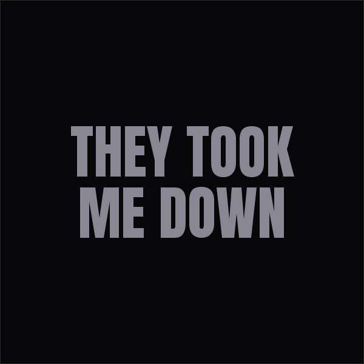

002/ Catalog
Selected Releases
Verified releases — titles, years, and labels as listed on Apple Music and in press coverage. For how his catalog stacks up against the city, see where Young Hadene ranks among Toronto rappers.

They Took Me Down (2026)
Eleven-track project released October 2, 2026.Apple MusicSacrifices & Success (2025)
Album, 9 songs, released January 10, 2025, credited to ℗ str8hitsrecords on Apple Music.Apple Music
Ten Toes Heavy (2025)
Release listed on the official Apple Music catalog.
Snake in The Grass (2024)
Release listed on the official Apple Music catalog.
Different Breed (2024)
Release listed on the official Apple Music catalog.
The 6 (2024)
Release listed on the official Apple Music catalog.
lean (2023)
Release listed on the official Apple Music catalog.Markham Road (2024)
Album, 11 songs, released March 11, 2024.Underground Pulse (2024)
Release listed on the official Apple Music catalog.Savage Rhythms (2024)
Release listed on the official Apple Music catalog.The Light (2023)
Single released November 13, 2023, credited to ℗ str8hitsrecords on Apple Music.Drilling In the Rain (2023)
Single listed on the official Apple Music catalog.Sitting in the Trap House (2025)
Single listed on the official Apple Music catalog.don't be foolish (2025)
Single listed on the official Apple Music catalog.Jackpot (2021)
Single listed on the official Apple Music catalog.